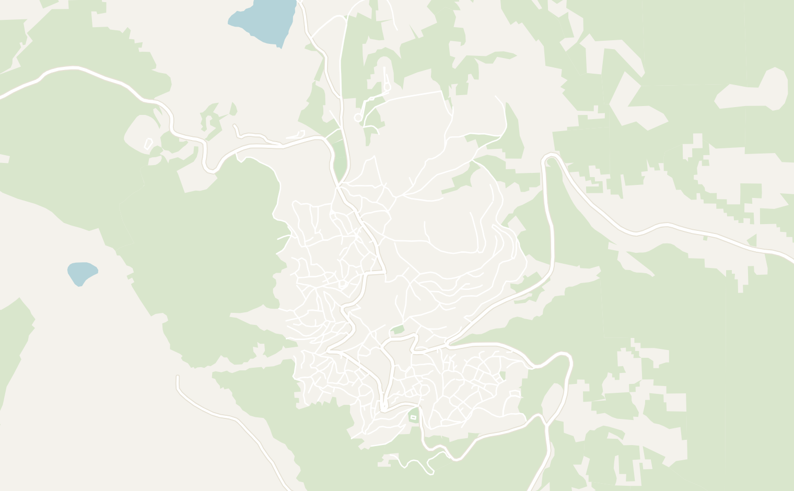
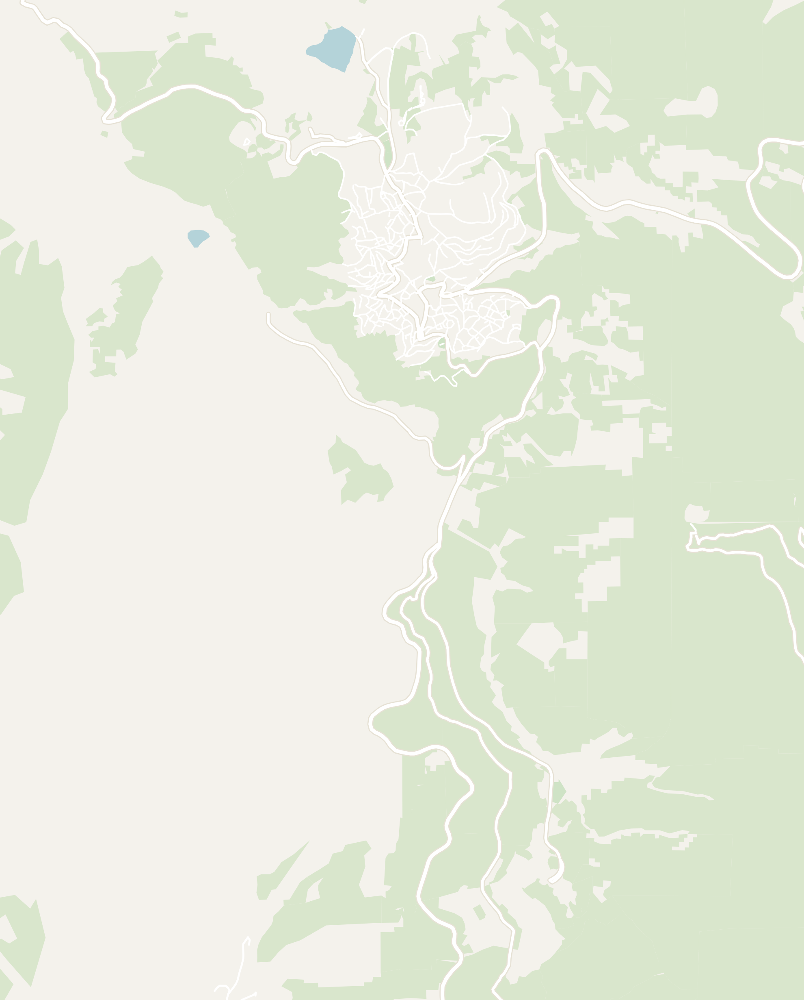
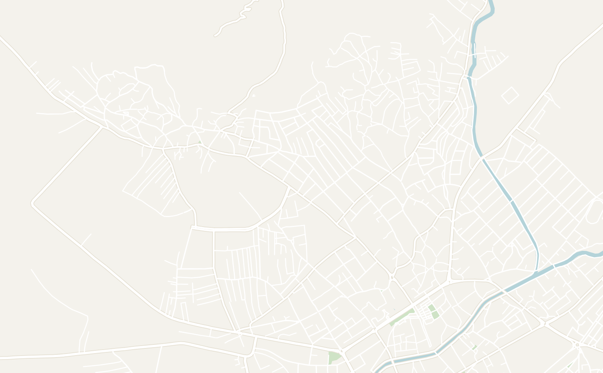
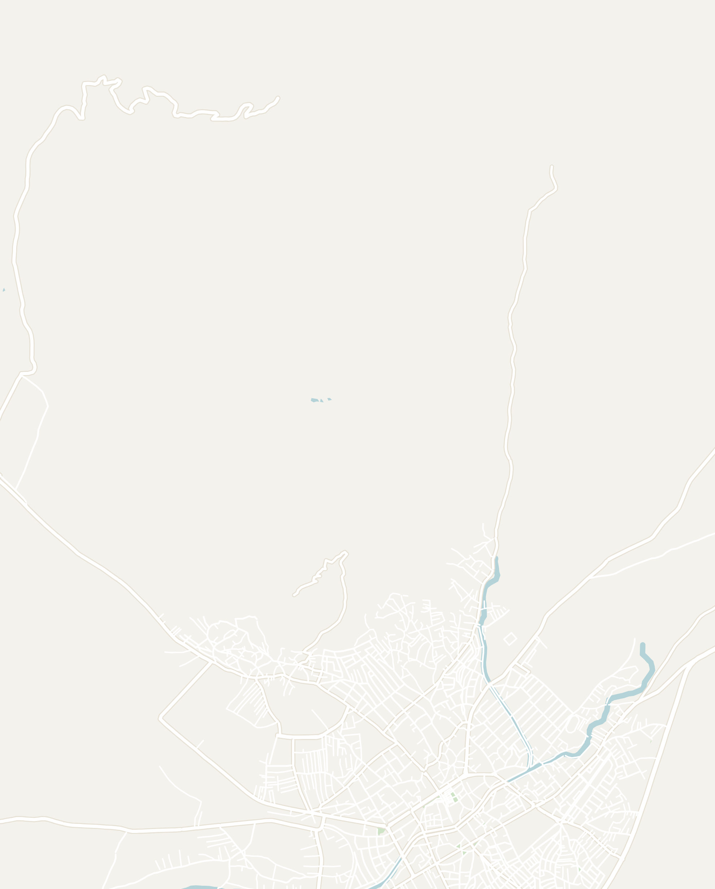

Ask a Macedonian where to go in their country and you'll hear the same two answers: Lake Ohrid and Krushevo. High in the mountains of North Macedonia, Krushevo is a quiet town of just 4,000 people, set in a narrow valley covered in lush pine forest. With its historic white houses and red roofs draped across both sides of the valley, Krushevo is known to be the most picturesque place in North Macedonia and holds an important place in the country's revolutionary history. It also earns the honor of being the highest town in North Macedonia at 1,350 meters. If you're after a real taste of small-town Macedonia, this is the place to get off the beaten path and away from the usual tourist circuit. Out of all the places on this blog, Krushevo is probably the most obscure, but it ended up being my favorite place in the entire country.

There isn't a long list of sights here, and that is the point. In fact, the town is so small that you can walk end to end in about 20 minutes. What you come for instead is to experience the slow, traditional pace of life that has been going on for centuries in the Balkans: a square where everyone in the town knows each other, people gathering firewood, friendly dogs that follow you to the viewpoints and hospitable locals who all say zdravo (hello) as you pass. Wander around the steep, winding cobblestone lanes past 19th-century houses and old cars from the Yugoslavia days parked on the side of the road.
Make sure to visit the Makedonium, a mysterious monument shaped like a spaceship, or hike up to Mechkin Kamen, both built in honor of the Krushevo Republic, which held off the Ottoman Empire for 10 days in August 1903. Krushevo is also one of Europe's paragliding capitals: it hosted the World Championships in 2019 and the European Championships in August 2026, and every summer pilots launch off the ridge above town. In winter, there is skiing at the Stanič ski center just outside town. I'd give Krushevo one or two nights to fully experience the town and traditional mountain life in North Macedonia.


Getting to Krushevo

Unless you have a car, getting to Krushevo takes a bit of planning. It turned into quite the adventure for me, but more on that in My Wild Taxi Ride below. The best way by public transit is the country's well-connected bus system. North Macedonia is a very small country, so you'll easily be able to get between major destinations in less than 3 hours. Buses across North Macedonia cost $5 to $10 a ride. Throughout the country, you'll see the town's name spelled Krushevo, Krusevo, Kruševo, or Крушево, all referring to the same town!
Set aside a full travel day, even though no single ride is more than three hours. Getting to Krushevo is tricky for three reasons:
- There are only a couple of direct minibuses a day from Skopje or Bitola. From anywhere else in the country you'll transfer through Prilep, the fourth-largest city in North Macedonia, which has far more connections than Krushevo. Layovers there can run to hours, so see what to do in Prilep below.
-
The bus times to Krushevo are all different depending on who you ask... I checked online, asked the staff at my hostel and the attendant at the bus station, and got three different answers. There is no online booking for this route, so it's best to confirm the schedule at the station beforehand. Balkan Viator is the best online resource for bus schedules, but I also found it unreliable. Here is the best schedule I could piece together:
- From Skopje — 3 direct minibuses a day from the Skopje bus station (7:45 AM, 3:45 PM and 4:45 PM; on Sundays 7:45 AM, 4:45 PM and 7:00 PM). The ride lasts 3 hours and costs 430 denars (about $8). You can also take any of the frequent Skopje to Prilep buses (2.5 hours) and then transfer to Krushevo
- From Ohrid — Buses from the Ohrid bus station to Prilep run every 1 to 2 hours and the ride lasts 2 hours. You can then transfer in Prilep to Krushevo. Balkan Viator lists one direct Ohrid to Krushevo bus a day, but it didn't show up when I tried to take it
- From Bitola — 2 direct minibuses a day from the Bitola bus station (12:20 PM and 4:30 PM). The ride lasts about 2 hours and costs 180 denars (about $3). There are also hourly Bitola to Prilep buses that you can use to transfer to Krushevo
- Prilep to Krushevo — about 6 minibuses a day Monday to Saturday (7:25 AM to 7:30 PM) and 3 on Sundays, 30 to 60 minutes depending on the stops, 110 denars (about $2).
- Pro Tip: Avoid Sundays. Half the buses don't run (even if they're listed on the schedule), towns like Prilep shut down completely, and if you miss a connection, you'll have to wait hours for the next. I ended up with a 7-hour wait in Prilep!
- Car or taxi — the easiest way is to skip the buses altogether, and both options are affordable. A rental car runs about $25 to $35 a day. There is little traffic once you leave Skopje, and Macedonians are decent drivers. A taxi from Prilep to Krushevo is roughly 20€ for the 40-minute ride up the mountain.
Leaving town — the Krushevo bus station is an unmarked parking lot at the bottom of the main street. I was a bit concerned I would miss my bus since there was no sign of life until the attendant came down and a crowd gathered 15 minutes before the bus left.
You can easily find it on Google Maps, and there is only one road out of Krushevo so the bus can't leave without you. There are direct minibuses back to Skopje at 7:00 AM and 4:30 PM, and the Prilep minibus about every 2 hours from 6:25 AM to 5:30 PM (with 3 departures on Sunday: 8:40 AM, 12:30 PM and 5:30 PM).
My Wild Taxi Ride
I started my journey to Krushevo from the beautiful Lake Ohrid. After a smooth minibus ride, I ended up in Prilep around midday. The connecting minibus to Krushevo wasn't due for 7 hours, so I lugged around my backpack and wandered into town. Guess I didn't get the memo, but the entire town closes on Sundays and Prilep felt like a ghost town. There was barely a single soul on the street...

After a couple of hours, I decided to get a taxi, so I went into a random small hotel to ask. The woman at the desk barely spoke English and gave me the death stare every time I spoke, but she actually spent 20 minutes calling around for me asking for a taxi. When nobody picked up, she sent me to the main square as a last resort saying "sometimes a driver waits there, even on a Sunday."
This is where it gets good... sitting right by the curb was a beat-up Ford from the late 90s with a missing side mirror, door handles and parts of the car taped together. A Macedonian man with a few missing teeth and tattoos was sitting inside ripping a cigarette. He pulled a price sheet out of the glove box, pointed at 20€ for Krushevo, and the moment I agreed he took the taxi sign off the roof and threw it in the back seat.

And just like that we were off... at 80 mph on our way to Krushevo (or at least I hoped we were both talking about the same town). At first, I was a bit nervous getting into a car that was definitely a fake taxi. He introduced himself as "Jimmy," which I assumed he made up. He then got me to open his glove box and showed me his Macedonian passport with D'Jimi on it to prove this was his real name.
He barely spoke English, but really wanted to talk the whole way. The conversation was: he would first poke me with his elbow, call me bro, say something in Macedonian and then be pissed I didn't understand. From what I could understand, he told me about his dream of moving to Italy, the tobacco farm he owned, and he pointed out his ex-wife at the gas station. He then ran around the gas station excited, telling everyone that he was driving Kevin from America.
D'Jimi started to grow on me as the ride progressed and I truly started to understand the meaning of Balkan Hospitality. Despite barely knowing English, he really wanted to show me his culture and tell me about his life. He bought me a bubblegum soda and played his favorite Macedonian song for me. In exchange, I showed him some American music which he quickly turned off. All of this while going full speed on the switchbacks up the mountains, tapping the brake just enough not to fly off the side.


Near the top of the mountain, Krushevo appeared above us as we entered the pine forest. It was instantly recognizable with the distinct white houses and red roofs, and I stopped worrying completely.
I didn't have the exact change to pay him so we drove around town twice trying to break my bills. Part of me started to think this was when I was going to get ripped off, but I was completely wrong. He counted out the change down to the last denar. This was one of my most memorable experiences while traveling, the most Balkan hour of my trip and a great reminder to be open to new experiences on the road.
Krushevo — The Town Itself
Krushevo sits in a narrow valley, with the tiny main square and the Church of St. Nicholas at the bottom and the houses stacked up the slopes on both sides. For a small town of 4,000, there is no shortage of things to do, and I was never bored in my two days here. I was happy I made the trek out to this remote village and I'm sure you'll be too.


Double-tap to open in Google Maps
Experience Small Town Life in North Macedonia


Begin your visit in the town square right off the main mountain road. I first arrived early on a Sunday morning, and there was a small farmers market going on. Groups of townspeople slowly gathered and started chatting. You could feel the sense of community come alive in a small town where everyone has known each other for generations.
As you start to explore, you'll see that life here feels frozen in time: a tractor rolling by through the middle of town, free-roaming horses grazing in the park, firewood stacked for the winter and old folks sitting on the porch with nowhere to be. The real magic of Krushevo isn't the monuments. It felt like a journey to the past with fresh mountain air and the perfect getaway after a few hectic days in Skopje.


One of the highlights of Krushevo is the traditional Macedonian architecture: whitewashed 19th-century houses with red tile roofs, wooden balconies and stone foundations. Look a bit closer and you'll see intricate woodwork, metalwork and paintings on the side of the buildings. The neighborhood of Vlashko Maalo is home to the best architecture in town and some of the most distinct buildings, particularly the big white house on the main road with rows of blue-framed windows over a stone ground floor.
The Makedonium

The Makedonium (officially the Ilinden Monument) feels out of place in the peaceful mountain town. Built in 1974 in the space-age style of Yugoslav modernism, the monument looks like an alien spaceship, giant pine cone or COVID-19 virus, with stained-glass windows and a huge ramp coming off the front. The monument sits alone in a big park at the top of the hill. You can see it hovering above the rest of the town in sharp contrast to the green hills and traditional Macedonian town below.


It was built in honor of the Ilinden Uprising of 1903 against the Ottomans. Out front is a row of chain sculptures for the stages of independence from the Ottomans, then a field of pillars and colorful murals.


The first time I visited the Makedonium, there was nobody there at all, not a visitor, not a guard. As you can imagine, Krushevo doesn't get many visitors, so the attendant isn't always there. When I came back on my second morning, a local woman saw me coming and ran up to open it. If it looks closed, ask the locals and they'll call the attendant.


From the inside, it is completely white and looks even more like a spaceship. The walls are lined with space age windows straight out of Star Wars and organic-shaped reliefs run along the walls symbolizing the birth of Macedonia. There are also unique stained glass windows at the top combining elements of traditional Macedonian architecture. The building itself is pretty small and in the middle is a spot for the eternal flame with two flags at the front.
There are no signs explaining the history of the Ilinden Uprising that the monument is dedicated to. I'm grateful the attendant walked me through the history verbally in excellent English. The Ilinden Uprising is a pivotal moment in Macedonian history, when the town rose up against the Ottomans who had ruled the area for about 500 years and declared the Kruševo Republic. It only lasted 10 days before 70,000 Ottoman troops crushed it and burned down most of the town. It's still the country's founding story: August 2, Ilinden, is North Macedonia's national holiday and Macedonian schoolchildren visit the monument as part of their education.
Best Viewpoints in Krushevo

If you're into photography, there are many beautiful viewpoints overlooking the town of Krushevo. Head up to one of these points for the golden hour for the best views. Here are the three best viewpoints I found in town:
- Hotel Montana Palace — a 4-star hotel situated at the top of the hill on the southern edge of town. Rooms here are relatively affordable and your balcony will have an incredible view of the whole town and the Makedonium. I watched the sunset from it both nights and the sunrise one morning. If you're staying somewhere else, the terrace at the hotel restaurant has the same view and is worth the walk up for a coffee. I'll say more about staying here later.
- Unmarked viewpoint — a spot in the neighborhood on the far side of town, west of the square, with nothing to mark it, but the view back across the valley. Follow the pin on Google Maps; my only company was the dog that followed me there.
- City Cemetery — this might seem like a strange place for a view. The city's cemetery has one of the best views above the town on the north side. It sits just below the Makedonium and is the easiest place to see the sunset over the red roofs below
Hunt for Remnants of the Yugoslav Era


North Macedonia was part of socialist Yugoslavia until it declared independence in 1991. The country has largely modernized and moved on, but Krushevo (and the capital, Skopje) still has plenty of relics of the Yugoslav years scattered around town. There is no doubt that the Makedonium is the biggest piece: it's one of the spomeniks, the abstract concrete monuments Yugoslavia built all over the country in the 1960s and '70s.


Old Yugoslav cars sit on every slope in town, most of them made by Zastava, Yugoslavia's national car company. You'll see everything from the tiny Zastava 750 to the Yugo (the little hatchback that was sold in America in the '80s) and old military vehicles. Some of them still run, and some look like they haven't moved since Tito was in power. On the edge of town is an old glass factory that was once the economic backbone of Krushevo. Today, it sits abandoned with its windows gone and its yard taken over by weeds.
Mechkin Kamen Hike


A visit to Krushevo wouldn't be complete without a hike into the lush, surrounding pine forests. Mechkin Kamen is an easy hike from town, roughly 5 miles and about 2 hours round trip. The hike starts along the road behind the Hotel Montana Palace and then through the forest. There are guides online (link here), but we were able to navigate using just Google Maps.
The hike culminates with a second monument of the Ilinden Uprising: a large bronze statue of a man holding a stone, which is how the rebels defended themselves against the Ottomans once they ran out of weapons. There are also large Cyrillic letters spelling out СЛОБОДА ИЛИ СМРТ, which means “Freedom or Death” in Macedonian, the motto of the uprising.
Despite being 6,500 miles from home, I ran into two American Peace Corps volunteers, and we ended up doing the hike together. They had been posted in Krushevo for 6 months to teach English and organize community events. Apart from us, the only people on the hike were an older couple selling souvenirs. It's a nice way to see the landscape, and the mountain air is a relief after the madness of Skopje.
Nikola Karev Monument and the Toše Proeski Memorial House


About a 15-minute walk uphill, north of the town square, is a small park with a statue of Nikola Karev, the leader of the Ilinden Uprising (yes, everything here is dedicated to it). You'll probably pass the park on your way up to the Makedonium, so it is worth stopping to take in the scenery. It was very peaceful, with the only other visitors being a grazing horse and a stray dog.

Next to the park is the Toše Proeski Memorial House, a museum dedicated to Toše Proeski. He grew up in Krushevo and became the biggest pop star of the former Yugoslavia, singing in Macedonian, Serbian, Croatian and English, and he even represented Macedonia at Eurovision in 2004. He's so beloved across the Balkans that he's often called the Elvis of the Balkans.
Unfortunately, he died in a car crash in Croatia at only 26. The entire country declared a day of mourning, and he's buried a short walk away in the City Cemetery, the sunset viewpoint I mentioned above. Nearly 20 years on, fans still come to honor him, and he's loved across the region. The museum was closed when I came by on a Sunday, but the cross-shaped building holds his awards, a recreation of his home studio and a wax figure of him.
Nikola Martinoski Gallery

The Nikola Martinoski Gallery is a traditional 3-story Macedonian house full of paintings and drawings by Nikola Martinoski, a well-known painter. He was born in Krushevo and this building is essentially a museum dedicated to him. They don't get many visitors and the family turned on the lights and opened the whole place just for me. To be honest, it was a quick 10-minute visit and is skippable.
A Day Trip to Prilep
As mentioned earlier, you'll likely pass through North Macedonia's fourth-largest city, Prilep, on your way to Krushevo. Prilep is a working city of about 65,000 people, much of it built in the brutalist concrete of the Yugoslav era. Candidly, I wouldn't go out of your way to visit unless you're passing through since there are so many better places in North Macedonia.
If you do visit, go on a weekday (everything is truly closed on Sundays). There are three main reasons to visit: the medieval fortress of Markovi Kuli on the granite ridge above town, the Ottoman old bazaar and clock tower in the center, and the Pivofest beer festival in mid-July. Here is what I saw and recommend doing if you find yourself in Prilep:


Double-tap to open in Google Maps
The Old Bazaar, Clock Tower and Čarši Mosque


Prilep's old town starts at the clock tower square and extends into an Ottoman bazaar. It has operated continuously since the 18th century and is still the city's main center of commerce. The bazaar is made for locals, not tourists: on a weekday it's where Prilep does its everyday shopping, and at night most of the city's cafes and bars are in and around it. The area is smaller than the bazaars in Skopje or Bitola.
In the middle of the square stands a massive clock tower, 38 meters tall, built in 1858 with money the townspeople raised after a fire destroyed the old one. The square doubles as a small park, ringed by popular restaurants and cafes where the locals hang out. It is the perfect place to grab a relaxing lunch in the city. I stopped at a small park cafe called Tabu Kafe and tried the pljeskavica, a spiced Balkan burger patty, with kajmak cheese melted into it.
The Čarši Mosque also stands in the middle of the bazaar. Originally built in the 15th century, the mosque has one of the oldest minarets in the region, with a double balcony. During the 2001 insurgency in Macedonia, the armed conflict between the ethnic Albanian National Liberation Army and Macedonian security forces, a mob burned it down on August 8, the night ten army reservists from the Prilep area were killed in the Karpalak ambush. The walls and most of the minaret still stand as a ruin. To this day, nothing has been restored, and the ruin is left open. When I visited, a homeless man was asleep on the floor.
Čento Square, the City Park and the Mound of the Unbeaten


Located across the street from the bazaar, Čento Square is the main square in Prilep. It was named after Metodija Andonov-Čento, the first president of socialist Macedonia, and it serves as the main gathering place in the city. The area is lined with cafes and is home to an equestrian statue of King Marko in the middle facing the clock tower.
From the square, Prilep's city park runs between the center and the hill. At its heart is the Mound of the Unbeaten, a 1961 memorial to the city's dead of the Second World War, with mosaics on the monuments (the archer and doves in the photos above). Yugoslavia lost more people in World War II than the US and the UK combined, and the war left a lasting mark on the region. It's the greenest part of town and the nicest walk in it.
The City Center


Once you leave the historic Ottoman bazaar and city park, the city transforms into the brutalist architecture characteristic of ex-socialist countries. If you're a sucker for brutalist architecture like me, you'll enjoy roaming the streets looking for angled concrete buildings, a monument of stacked disks at a roundabout, and apartment blocks that haven't changed since the 1970s. I found the brutalism here comparable to the buildings you find in Skopje.
Markovi Kuli (Marko's Towers)

Perhaps the best-known attraction in town, Markovi Kuli is the remains of the medieval Macedonian fortress located high up on the hill above town. The walk starts in Varoš, the old neighborhood at the foot of the hill, located about 30 minutes on foot from the city center. Start by following the road up through the village until it's too rough for a car, then take the path to the top. The entire hike is roughly 4 km and a little more than an hour round trip. It is relatively short, but very steep toward the end, with no trees for shade.
Up top, rings of stone walls from the 13th and 14th centuries wrap around the hill, with three towers still standing on the south side and an iron cross on the summit. The hill is covered in huge granite boulders worn into strange shapes (one is called the Stone Elephant), and the rock landscape has been on UNESCO's tentative list since 2004. From the iron cross, you'll have the best view overlooking all of Prilep and the flat Pelagonia plain beyond it. For more details, the website SailingStoneTravel has a good guide to the hike itself.
Pivofest

Every year in July, Prilep hosts Macedonia's answer to Oktoberfest. The beer festival lasts four days and draws an estimated 200,000 people from all over the Balkans. Enjoy a local Zlaten Dab beer with a wide variety of grilled sausages and meats. It's the oldest beer festival in North Macedonia and by most accounts the biggest festival of any kind in the country, and the dates and lineup go up each year on its official Facebook page. Locals really recommended it when I visited, saying it's their favorite time of the year.
Where to Eat
Krushevo has a handful of restaurants around the square, serving some of the best Macedonian food I had in the entire country. Most restaurants were family-run, serving traditional home-cooked meals the family has been making for generations. Meals are affordable and the portions are more than enough. For more on Macedonian cuisine and the dishes to try, see the food section of my North Macedonia itinerary. Here are some of my favorite restaurants in town.
- Krushevska Odaja — hands down the best restaurant in town with good traditional Macedonian food and rustic decor to match. I had sarma, three big cabbage rolls stuffed with rice and minced meat, served with sour cream.


- Marchelo Lounge Bar — right off the main square, where we had lunch after the hike. I tried the selsko meso, a chicken and pork meatball stew with tomatoes and cheese served in a clay pot with bread. I didn't see this anywhere else in the country and it was one of the better meals I had in Macedonia.

- Hotel Montana Palace — I generally avoid eating at hotel restaurants, but the Hotel Montana Palace is an exception. The restaurant decor was tasteful, breakfast was complimentary and prices were reasonable (especially for a 4-star hotel). One measure of a Macedonian restaurant is how well it makes tavče gravče, the national dish of baked beans, and this one passed with flying colors. Breakfast the next morning was a hunter's stew called mandza, with beef, potatoes and vegetables, and scrambled eggs with tomatoes and peppers, a lot like Turkish menemen.


Where to Stay
The best place to stay in town is the Hotel Montana Palace. The hotel sits at the top of the hill, and almost every room has a balcony overlooking the whole valley, the town and the Makedonium, one of the best views in Krushevo. The balcony is the perfect place to watch the sunset. The hotel itself has four stars and is a bit dated, but at $85 a night, it was reasonably priced. I was one of the only guests during my stay, and the staff was incredibly helpful with planning bus schedules and hikes.


Explore More